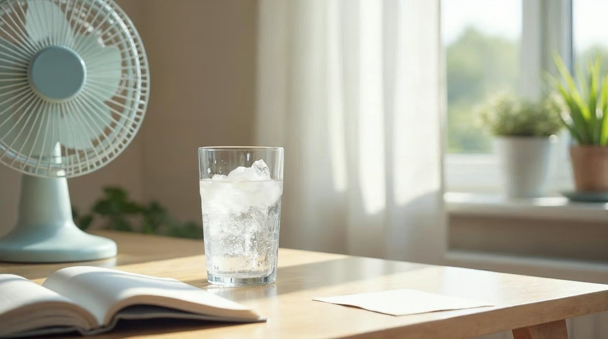
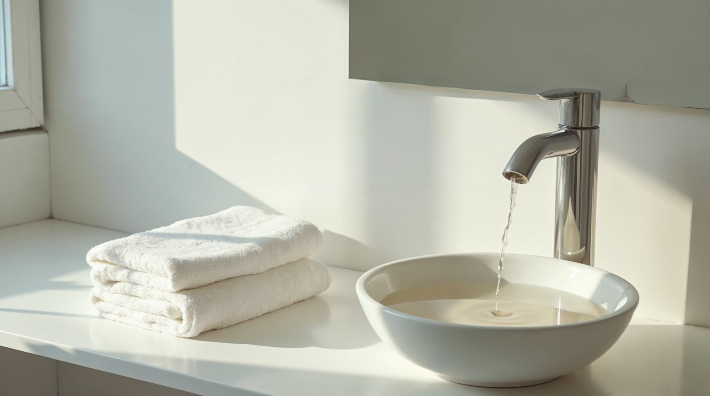
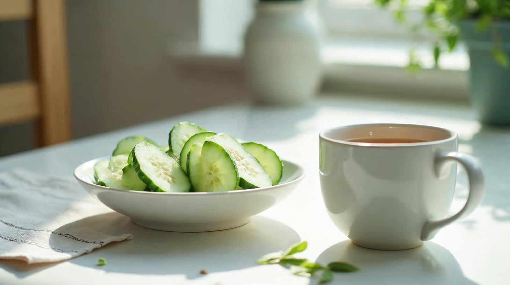
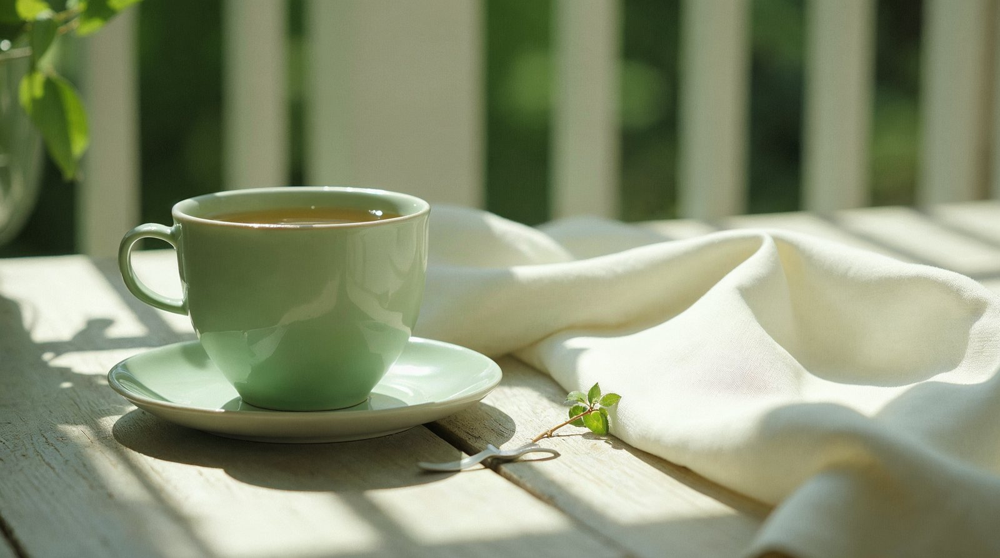
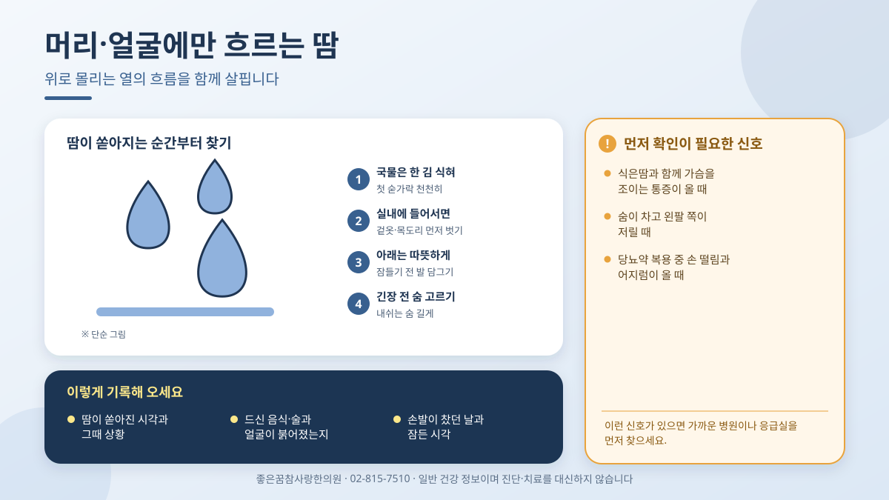

이종호 한의사 감수좋은꿈참사랑한의원 대표원장 (한의사 면허번호 19769)발행 2026-11-26 · 수정 2026-11-26
이 글의 차례
점심시간 식당에서 뜨끈한 국밥 한 숟가락을 뜨자마자 이마에서 땀이 주르륵 흘러내립니다. 옆자리 동료는 아무렇지 않게 먹고 있는데, 나는 휴지를 연신 뽑아 이마와 목덜미를 닦습니다. 등과 팔은 멀쩡한데 유독 머리와 얼굴만 젖어 머리카락이 이마에 들러붙습니다.
이런 분들이 진료실에서 가장 많이 하시는 말씀은 "창피하다"입니다. 회의 중에, 소개팅 자리에서, 손님을 맞이하는 순간에 얼굴이 땀으로 번들거리면 남의 시선이 먼저 신경 쓰입니다. 화장이 지워지고, 안경이 미끄러지고, 모자를 쓰면 금세 축축해집니다.
한의학에서는 머리와 얼굴에 땀이 몰려 나는 것을 두한(頭汗)이라고 부릅니다. 머리 두, 땀 한 자를 써서 말 그대로 머리 쪽 땀이라는 뜻입니다. 오래전부터 따로 이름을 붙여 살폈을 만큼 흔한 고민이었다는 이야기이기도 합니다.
두한은 그 자체로 위험한 병이라기보다, 몸 안의 열이 위로 몰리거나 몸 아래쪽은 차고 위쪽만 뜨거운 흐름을 알려 주는 신호로 볼 때가 많습니다. 그래서 땀만 보지 않고 잠, 소화, 손발 온도, 마음의 긴장을 함께 여쭙습니다.

두한은 어떤 모습으로 나타나나요
두한이 있는 분들의 땀은 대체로 이마, 관자놀이, 두피, 코 옆, 윗입술 주변에서 시작해 목덜미로 흘러내립니다. 가슴이나 등은 촉촉한 정도인데 얼굴만 물을 뒤집어쓴 것처럼 젖는 경우가 많습니다.
땀이 나는 순간도 비슷한 흐름을 보입니다. 따뜻하거나 매운 음식을 먹을 때, 술을 한두 잔 마셨을 때, 사람들 앞에서 긴장할 때, 추운 바깥에서 따뜻한 실내로 들어설 때가 가장 흔합니다. 가만히 앉아 있을 때는 괜찮다가 이런 순간에 갑자기 쏟아집니다.
얼굴이 함께 붉어지는 분도 있고, 얼굴색은 그대로인데 땀만 나는 분도 있습니다. 땀을 흘린 뒤 머리가 띵하거나 뒷목이 뻣뻣해진다는 분, 반대로 땀을 쏟고 나면 개운하다는 분도 있어서 그 뒤의 느낌까지 함께 여쭙니다.
왜 머리와 얼굴에만 땀이 몰릴까요
얼굴과 두피는 원래 땀샘이 많고 혈관이 풍부한 자리입니다. 몸이 열을 내보내야 할 때 가장 먼저 반응하는 곳이어서, 같은 열이라도 머리 쪽에 땀이 먼저, 그리고 많이 맺히기 쉽습니다. 어느 정도는 누구에게나 있는 반응입니다.
이 반응이 유난히 큰 분들은 몇 가지 흐름이 겹친 경우가 많습니다. 한의학에서는 먼저 속에 열이 쌓여 위로 치솟는 경우를 봅니다. 기름지고 매운 음식, 술, 늦은 야식이 잦고 변비나 입마름, 입냄새가 함께 있는 분들에게서 자주 보입니다.
다음으로 위는 뜨겁고 아래는 찬 흐름을 봅니다. 얼굴과 머리는 화끈한데 손발과 아랫배는 차고, 긴장하면 가슴이 답답해지는 분들입니다. 열이 몸 전체로 고르게 퍼지지 못하고 위쪽에 머물면서 머리 쪽 땀으로 빠져나간다고 이해합니다.
소화 기능이 약하고 몸에 습기가 많은 경우도 있습니다. 몸이 무겁고 잘 붓고, 식사 뒤에 더부룩하면서 이마에 끈적한 땀이 맺히는 분들입니다. 이처럼 같은 두한이라도 몸의 사정이 다르기 때문에 진찰을 통해 어느 쪽에 가까운지 먼저 가늠합니다.
먹을 때만 땀이 나는 경우에는 미각 자극에 따른 땀도 생각합니다. 매운 것이나 신 것을 먹을 때 이마와 코 주변에 땀이 맺히는 것은 흔한 반응이지만, 침샘 쪽 수술이나 귀 아래 부위를 다친 뒤 한쪽 볼에만 땀이 몰린다면 그 이력을 꼭 말씀해 주세요.
다한증, 갱년기 열감, 홍조와는 어떻게 다른가요
얼굴 다한증은 덥지 않아도, 먹지 않아도 일상적으로 땀이 많이 나서 생활이 불편한 상태를 말합니다. 대개 어릴 때나 젊을 때부터 시작되고 가족 가운데 비슷한 분이 있는 경우가 많습니다. 손바닥이나 겨드랑이 다한증과 함께 오기도 합니다.
갱년기 열감은 가만히 있다가도 가슴과 얼굴 쪽으로 화끈한 열이 파도처럼 올라왔다가 몇 분 뒤 가라앉는 것이 특징입니다. 땀과 함께 두근거림이 오고, 밤에 땀에 젖어 깨기도 합니다. 생리 변화가 시작된 시기와 겹치는지를 함께 여쭙습니다.
안면홍조나 주사는 땀보다 얼굴이 붉어지고 화끈거리는 것이 중심입니다. 볼과 코가 쉽게 빨개지고 작은 혈관이 비쳐 보이기도 합니다. 땀과 홍조가 함께 있는 분도 많아서, 둘 가운데 어느 쪽이 더 불편한지를 먼저 여쭙고 살피는 방향을 정합니다.
두한을 겪는 분들이 자주 헷갈리는 것
첫째, 땀이 많으면 몸이 허약하다는 생각입니다. 땀이 많다고 모두 기운이 약한 것은 아닙니다. 오히려 열이 많고 기운이 넘치는 분에게서 두한이 더 흔하게 보이기도 합니다. 땀을 흘린 뒤 지치는지, 개운한지가 이 둘을 나누는 중요한 실마리가 됩니다.
둘째, 땀을 참으려고 물을 덜 마시는 습관입니다. 물을 줄인다고 머리 땀이 줄지는 않고, 오히려 몸이 열을 식히기 어려워지면서 얼굴이 더 달아오를 수 있습니다. 물은 조금씩 자주 드시는 편이 좋습니다.
셋째, 두피 땀 때문에 머리를 하루에 여러 번 감는 습관입니다. 너무 자주, 너무 뜨거운 물로 감으면 두피가 건조해지고 가려움이나 각질이 늘 수 있습니다. 땀을 흘린 뒤에는 미지근한 물로 가볍게 헹구고 잘 말리는 것만으로도 충분한 날이 많습니다.
계절과 생활 리듬에 따라 달라지는 머리 땀
여름에는 당연히 머리 땀이 늘지만, 의외로 겨울에 더 힘들다는 분도 많습니다. 찬 바깥에서 몸이 움츠러들었다가 난방이 강한 지하철이나 사무실에 들어서는 순간, 두꺼운 외투와 목도리 속에 갇힌 열이 머리 쪽으로 한꺼번에 몰리기 때문입니다.
잠이 부족한 날, 일이 몰려 쫓기듯 지낸 날에도 머리 땀은 늘어납니다. 몸이 긴장한 채로 하루를 보내면 열이 아래로 내려가지 못하고 위쪽에 머무르기 쉽습니다. 그래서 두한을 살필 때 잠과 일의 흐름을 함께 여쭙습니다.
체중이 늘어난 시기와 머리 땀이 심해진 시기가 겹치는 분도 있습니다. 같은 움직임에도 몸이 더 많은 열을 만들고, 그 열이 가장 빠져나가기 쉬운 머리 쪽으로 몰리는 것입니다. 이럴 때는 땀과 함께 체중과 허리둘레의 흐름을 같이 보면 도움이 될 수 있습니다.

두피와 얼굴 피부는 어떻게 챙기나요
땀이 자주 흐르는 두피는 습기와 피지가 함께 머물기 쉬워 가려움이나 냄새, 뾰루지가 생기기도 합니다. 땀을 흘린 뒤에는 수건으로 문지르기보다 꾹꾹 눌러 닦고, 모자는 통풍이 되는 것으로 고르시면 좋습니다.
얼굴은 땀을 닦을 때마다 피부가 쓸려 붉어지기 쉽습니다. 마른 휴지로 세게 문지르기보다 부드러운 손수건으로 눌러 닦아 주세요. 땀이 많은 날 두꺼운 화장이나 기름진 크림은 땀구멍을 막아 오히려 답답함을 키울 수 있습니다.
먼저 이렇게 여쭙니다
처음 오시면 저는 대략 이런 순서로 여쭙니다. 미리 떠올려 오시면 이야기가 훨씬 수월해집니다.
- 머리와 얼굴 땀은 언제부터 심해졌나요?
- 땀이 가장 많이 나는 순간은 언제인가요? 식사, 긴장, 따뜻한 실내 가운데 어디에 가깝나요?
- 손발이나 아랫배는 차가운 편인가요?
- 땀을 흘린 뒤 개운한가요, 지치나요?
- 입마름, 변비, 더부룩함, 잠의 변화가 함께 있나요?
- 드시는 약이나 영양제, 술과 커피 습관은 어떤가요?
모든 질문에 정확히 답하지 못하셔도 괜찮습니다. 이 대답들을 맥과 혀, 몸의 온도 차이와 함께 놓고 보면 열이 위로 몰리는 몸인지, 속이 약하고 습기가 많은 몸인지가 조금씩 드러납니다.

일상에서 먼저 해 볼 수 있는 것
두한은 생활의 작은 습관에 따라 오르내림이 큰 편입니다. 한꺼번에 바꾸기보다 하나씩 골라 2주 정도 이어 보세요.
- 맵고 뜨거운 국물은 한 김 식혀서 천천히 드시기
- 술 마시는 날의 횟수부터 줄여 보기
- 저녁은 잠들기 3시간 전쯤 마무리하기
- 따뜻한 실내에 들어서면 겉옷과 목도리를 먼저 벗기
- 땀이 날 것 같은 자리에는 작은 손수건과 여벌 마스크 챙기기
- 긴장되는 일 전에는 숨을 길게 내쉬는 호흡을 몇 차례 하기
식사 땀이 많은 분은 첫 몇 숟가락이 중요합니다. 뜨거운 국물을 바로 들이켜기보다 밥과 반찬부터 천천히 드시고, 국물은 조금 식은 뒤 드시면 이마에 맺히는 땀이 한결 줄었다고 말씀하시는 분이 많습니다.
긴장할 때 쏟아지는 땀은 땀이 날까 봐 걱정하는 마음이 다시 땀을 부르는 고리가 되기 쉽습니다. 땀이 나도 괜찮다고 스스로에게 말해 주고, 손수건을 미리 손에 쥐고 있으면 마음이 조금 놓여 고리가 느슨해지기도 합니다.
손발과 아랫배가 찬 분은 아래쪽을 따뜻하게 하는 것도 도움이 될 수 있습니다. 양말을 신고, 무릎 담요를 덮고, 잠들기 전 미지근한 물에 발을 담가 보세요. 위로 몰린 열이 아래로 조금 내려가는 느낌을 받으시는 분이 많습니다.
한의원에서 함께 살필 수 있는 경우
- 식사나 술, 긴장 때마다 머리와 얼굴에 땀이 쏟아지는 경우
- 얼굴은 뜨거운데 손발과 아랫배는 차가운 경우
- 머리 땀과 함께 입마름, 변비, 더부룩함이 이어지는 경우
- 두피 땀이 많으면서 두피 가려움이나 각질이 늘어난 경우
- 검사에서 특별한 이상은 없는데 얼굴 땀이 생활을 불편하게 하는 경우
좋은꿈참사랑한의원에 오시면 먼저 아래 '먼저 확인이 필요한' 신호가 없는지부터 봅니다. 그다음 맥과 혀, 얼굴과 손발의 온도, 땀이 나는 때와 자리, 잠과 소화, 대소변을 함께 여쭙니다.
진찰한 내용을 바탕으로 생활에서 바꿔 볼 것 하나와 함께 침이나 한약 상담 가운데 지금 상태에 맞는 것을 정합니다. 한약을 상의할 때는 드시는 약을 모두 확인하고 신중하게 정합니다. 다른 병원에서 처방받아 드시는 약은 처방한 선생님과 상의 없이 멈추지 않습니다.
임신 중이시거나 임신 가능성이 있다면 진료 전에 먼저 알려 주세요. 갱년기 열감이 의심되면 산부인과 진료를, 갑상선이나 혈당이 걱정되면 내과 검사를 함께 받으시도록 안내합니다.
두한은 몇 번 만에 달라지기보다 생활과 몸의 흐름이 함께 바뀌면서 조금씩 변하는 경우가 많습니다. 그래서 처음에는 땀 기록과 생활 습관을 함께 보며 무엇이 땀을 부르는지 찾는 데 시간을 들이고, 그다음 걸음을 같이 정해 나갑니다.
진료를 받는 동안에도 땀이 생활에 주는 불편은 이어질 수 있습니다. 중요한 자리가 있는 날에는 일정을 조금 여유 있게 잡고, 손수건과 여벌 옷을 챙겨 마음을 먼저 편하게 해 두세요. 마음이 놓이면 땀도 한결 덜 쏟아지는 분이 많습니다.
이렇게 기록해 오시면 상담이 쉬워집니다
머리 땀은 그 순간이 지나면 기억이 흐려지기 쉽습니다. 1~2주만 간단히 적어 보세요.
- 땀이 쏟아진 시각과 그때의 상황(식사, 긴장, 실내 이동 등)
- 그때 드신 음식과 음료, 술
- 땀이 난 자리와 얼굴이 붉어졌는지 여부
- 땀을 흘린 뒤의 느낌(개운함, 지침, 두통 등)
- 잠든 시각과 깬 시각, 대변 상태
- 손발이 찼던 날 표시
기록을 나란히 놓고 보면 땀이 쏟아지는 순간에 공통점이 보이기 시작합니다. 뜨거운 국물 때문인지, 긴장 때문인지, 잠을 설친 다음 날인지가 드러나면 무엇부터 바꿀지 정하기가 훨씬 쉬워집니다.

땀과 조금 더 편하게 지내기 위해
얼굴에 흐르는 땀은 남들 눈에 잘 띄어서 실제보다 더 크게 느껴지곤 합니다. 하지만 대부분은 몸이 열을 내보내는 방식이 조금 위쪽으로 쏠려 있는 것이고, 그 쏠림은 생활과 함께 살펴볼 수 있습니다.
땀이 나는 순간을 알아차리고, 그 순간을 부르는 습관을 하나씩 덜어 내다 보면 얼굴을 닦는 손수건이 조금씩 덜 젖는 날이 옵니다. 서두르지 않고 천천히 함께 살펴보겠습니다.
이번 주에는 하나만 골라 보세요. 국물 한 김 식혀 먹기, 실내에 들어서면 목도리 먼저 벗기, 잠들기 전 발 담그기. 다음에 오시면 땀 기록부터 함께 펼쳐 보겠습니다.
이런 증상은 먼저 확인이 필요합니다
- 갑자기 식은땀이 쏟아지면서 가슴을 조이는 통증이나 숨참, 왼팔 쪽 저림이 함께 오는 경우
- 당뇨약을 드시는 중에 식은땀과 함께 손이 떨리고 어지러우며 정신이 멍해지는 경우
이런 신호가 있으면 한의원보다 가까운 병원이나 응급실을 먼저 찾으세요.
함께 읽으면 좋은 글
- 손바닥·발바닥·겨드랑이에 땀이 너무 많은 다한증은 어떻게 살피나요?
- 얼굴은 달아오르는데 발은 찬 몸에 상열하한이라는 말을 들었을 때, 어떤 뜻이고 무엇을 살피나요?
- 얼굴이 쉽게 붉어지고 화끈거리는 안면홍조와 주사(딸기코)는 어떻게 살피나요?
- 얼굴이 달아오르고 땀이 갑자기 날 때는 어떤 점을 살펴보나요?
- 땀이 많거나 적다고 하면 진료실에서 무엇을 묻나요?

여쭙는 것
- 머리와 얼굴 땀은 언제부터 심해졌나요?
- 땀이 가장 많이 나는 순간은 언제인가요? 식사, 긴장, 따뜻한 실내 가운데 어디에…
- 손발이나 아랫배는 차가운 편인가요?
생활에서 해 볼 것
- 맵고 뜨거운 국물은 한 김 식혀서 천천히 드시기
- 술 마시는 날의 횟수부터 줄여 보기
- 저녁은 잠들기 3시간 전쯤 마무리하기
한의원에서 함께 살필 것
- 식사나 술, 긴장 때마다 머리와 얼굴에 땀이 쏟아지는 경우
- 얼굴은 뜨거운데 손발과 아랫배는 차가운 경우
- 머리 땀과 함께 입마름, 변비, 더부룩함이 이어지는 경우
먼저 확인이 필요한 신호
- 갑자기 식은땀이 쏟아지면서 가슴을 조이는 통증이나 숨참, 왼팔 쪽 저림이 함께 오는…
- 당뇨약을 드시는 중에 식은땀과 함께 손이 떨리고 어지러우며 정신이 멍해지는 경우
한눈에 보는 표
| 구분 | 핵심 |
|---|---|
| 여쭙는 것 | 머리와 얼굴 땀은 언제부터 심해졌나요? 땀이 가장 많이 나는 순간은 언제인가요? 식사, 긴장, 따뜻한 실내 가운데 어디에 가깝나요? |
| 생활에서 해 볼 것 | 맵고 뜨거운 국물은 한 김 식혀서 천천히 드시기 술 마시는 날의 횟수부터 줄여 보기 |
| 한의원에서 함께 살필 것 | 식사나 술, 긴장 때마다 머리와 얼굴에 땀이 쏟아지는 경우 얼굴은 뜨거운데 손발과 아랫배는 차가운 경우 |
| 먼저 확인이 필요한 신호 | 갑자기 식은땀이 쏟아지면서 가슴을 조이는 통증이나 숨참, 왼팔 쪽 저림이 함께 오는 경우 당뇨약을 드시는 중에 식은땀과 함께 손이 떨리고 어지러우며 정신이 멍해지는 경우 |
자주 묻는 질문
머리에만 땀이 나는 것도 다한증인가요?
덥지 않거나 먹지 않을 때도 일상적으로 땀이 많아 생활이 불편하다면 얼굴 다한증에 가까울 수 있습니다. 식사나 긴장 같은 특정한 순간에 몰린다면 몸의 열 흐름을 함께 살펴봅니다.
밥 먹을 때 이마에 땀이 나는 건 정상인가요?
맵거나 뜨거운 음식을 먹을 때 이마에 땀이 맺히는 것은 흔한 반응입니다. 다만 매 끼니 땀이 흘러내릴 정도라면 식사 습관과 속의 상태를 함께 보는 것이 좋습니다.
두피 땀 때문에 머리를 자주 감아도 괜찮나요?
너무 자주, 뜨거운 물로 감으면 두피가 건조해질 수 있습니다. 미지근한 물로 가볍게 헹구고 두피를 잘 말리는 쪽을 권합니다.
두한도 한약으로 살펴볼 수 있나요?
진찰한 뒤 열이 위로 몰리는 쪽인지, 속이 약하고 습기가 많은 쪽인지를 보고 정합니다. 드시는 약을 모두 확인한 뒤 신중하게 상의합니다.
좋은꿈참사랑한의원은 재진 때 지난번 이야기부터 이어서 여쭙니다. 진료시간과 예약은 오시는 길에서 확인하세요.
어디서 상담받을 수 있나요?
좋은꿈참사랑한의원은 서울 동작구 만양로2길 2 신성빌딩 3층·5층(서울 동작구 상도동, 7호선 상도역 3번 출구 근처)에 있습니다. 한의사 3명(이종호 대표원장, 조영기 수석진료원장, 정원영 진료원장)이 진료합니다. 진료시간은 평일 09:30~20:00(점심 13:00~14:00), 토·일·공휴일 09:30~15:00이며, 방문 전 전화로 확인을 권합니다. 예약은 네이버 예약, 카카오톡 상담, 전화 02-815-7510로 받습니다.
이 글은 일반적인 건강 정보이며 개인의 진단이나 치료를 대신하지 않습니다. 증상이 있거나 복용 중인 약이 있다면 진료를 통해 확인하세요. 치료 효과는 개인마다 다를 수 있습니다.
작성 기준: 일반적으로 알려져 있는 건강 정보를 참고해 정리했습니다(대표원장 감수). 증상 기록은 1~2주 동안 하루 1회, 비슷한 시간에 적어 오시면 지난 상태와 비교하기 쉽습니다.